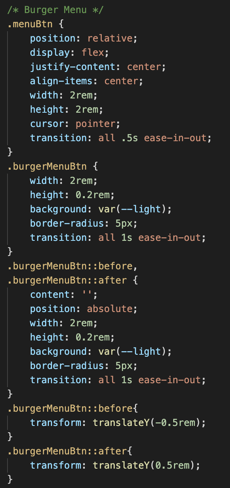

Appendix
- Investigation and Plan
- Brief Breakdown
- Research
- Design
- Implementation and Testing
- Evaluation
- References
- Word Count
Investigation and Plan
Brief Breakdown
Decomposition

The first thing that I did once the brief was
released was breaking it down using decomposition.
This made approaching each aspect easier and made sure
that every element of the project would be covered and
not forgotten about. This is the beginning stage of any
design loop - defining the problem. Here are the two parts
of the brief:
Task
For this project you are required to design and develop:
1. An interactive website on behalf of a fictional home
automation company.
2. An embedded system that could be used as part of a
home automation system.
Basic Requirements
All of these are required to score higher than a H4 (with advanced
requirements):
Website:
- Suits fictional smart home company
- 4 pages including a home page
- User-friendly navigation with clean visual design
- Use of: Headings, Paragraphs, Lists, Tables, Links, Images, Multimedia
- Is accessible (Mobile devices etc.)
Embedded System:
- Standalone Device
- Should work with minimal user input
Advanced Requirements
The main difference here is the inclusion of control
or monitoring of the embedded system from the website or
another networked device. This means that data must go from
website to system or vice versa.
Another difference is the inclusion of more data capture within
the website (forms, labels, buttons, menus, etc.)
As well as these there should be the implementation of a
validation system.
Research
Choosing a Problem
My first task in beginning this project was deciding upon the theme and function of my smart home device. For this, I made a spider diagram of my ideas along with friends and family in a variety of different demographics I interviewed on the subject. I first found the common problem in the household and then came up with computational solutions to the problem. I also looked into some existing solutions to household problems. This was helpful in coming up with my solutions.
3 Solutions
After researching some common household problems, I then came up with
three different solutions that would fit the brief.
My first was a typical smart home feature that allowed the user to
control lights from their browser. This solution had advanced options
such as light timing or control using sensors.
My second solution was an automated pet feeder. This could use a
servo motor to open and close a valve of pet food. This feeder could be
automated or manually controlled through a website.
My third idea was a basic smart home device catered towards elderly people
or those distrustful of always-listening devices. When started, the system
records what the user is saying and then sends that to a webpage allowing
the user to view their reminders or notes.
Chosen Solution
I evaluated my three solutions and rated them based on: the time required, how well they fit the brief, my interest in the subject and difficulty. Through this, I came to the conclusion that I would do my third solution. This is the smart reminder device. One of the reasons for this was the challenge of using an AI system which I had never done before. I also thought that this was the most practical of the solutions and the most likely to be useful.
Decomposition of Solution
I broke down the project into more manageable chunks to make doing the project
easier. This also aided in my research. They were:
- Recording Voice
- Audio to Text
- Sending Data to Database
- Viewing the Data
- Company Website
Overview
Design
Recording Voice
This is the embedded system portion of the project
This would be performed locally on the raspberry pi. It will
record a snippet of audio and save it to the system so it can then
be converted into text format.
After researching this topic, I decided to use python along with
a small usb microphone plugged into the raspberry pi. I considered other
single board computers for this project but the raspberry pi seemed the most
appropriate and had the most resources surrounding it online.
For the recording process itself I decided I would use a software called
Alsa. I chose this because it was built into the Pi's linux os and was
highly recommended by others I had found doing similar things online.
To work with this audio in python I chose the python import PyAudio.
This was because of it's ease of use and I had found a lot of resources online
to help use it.
Audio to Text
This portion of the project uses AI technology to convert an audio
file into text format. Unfortunately I don't have the skills nor time
to create this type of programme so I decided to use an import to help
me achieve this.
I looked into different methods of achieving this text to speech system. I
needed it to be a quick and reliable process. I learned about a python import
called speech_recognition. This import gave me lots of audio to text AI solutions
to choose from made by companies such as Bing and Google.
Sending Data to Database
This part involves getting the text file recorded and sending it
to a database so that it can be later accessed by the
website.
I looked into different databases and different ways in which I could
access this database. This part of the project brought the most difficulty
as can be seen from the actual design. The databases I looked into were ThinkSpeak,
Amazon Web Services and Firebase. Firebase was my original choice and what I eventually came
back to. I also looked at other languages to achieve this such as Python and Sql but settled
on using Python.
Viewing the Data
For the user to be able to view the data I need to have a way in which
I can first get the text data from the database to the website.
For this part of the research, I designed my solution along with my solution
to sending the data. This was because they were both reliant on each other.
I trialled the same databases like the ones I used to send the data. I decided
to use Javascript as the language to receive the data and display it in an
HTML element.
Company Website
For this section I need to create a website with at least 4 web pages,
a data capture feature and to display my data from my database.
I had worked with websites before as a part of my ALTs but for this project I
wanted my website to reflect the qualities of professional websites used by
tech corporations. I made a list of websites that I thought displayed these
qualities and began learning how I could create the same look myself.
I did research focused on the use of Javascript, CSS animations and layering
HTML elements. These parts of the website I think bring it closer to one which
is used by smart home companies.
Implementation and Testing
Design Process
In this project I used the iterative design process seen in this diagram. This process is one that I have focused on throughout this project and previous ALTs. I first created a planning document, seen in the previous section. I also kept a GANTT diagram there to keep me on track with the project deadline. I used pseudo code to help in creating the Python code for the embedded system. Before creating my website, I made wireframe sketches. This greatly sped up the website development process. When I thought I was finished with my website I got feedback from classmates and friends to get an outside perspective. Once I was happy with the feedback, I evaluated the project myself.
Pseudo Code
I used pseudo code when making the Python script for my embedded system.
This made the process a lot simpler by using computational thinking to
approach each problem individually. This use of abstraction meant I could
focus on the main points for each step of the project
My pseudo code went as follows:
- Import modules for audio, speech recognition and firebase.
- Define all variables for audio.
- Loop through recording function.
- Save audio as a .wav file.
- Use speech recognition to convert .wav file to text file
- Send text data to firebase
Audio Development
My first step in setting up the audio on the pi was configuring the microphone
so that it was recognised by the system. To do this I needed to use a linux driver
called Alsa. Using this driver in the linux terminal, I could view my device number
and then set it as the default microphone for the system. I then ran a test recording
which was successful. This was my first time working in the linux terminal and it was
a good learning experience for me.
With my microphone set up and device number I could begin working with the microphone
in python. I used the PyAudio import and using their documentation I specified each
variable required to record. These were sample rate, chunks and recording time. I then
ran their audio function and looped it for the required time. This code was difficult
but I found lots of good documentation online to help.
I then set up my firebase database so that I could save these text files. This came with
problems at first as the raspberry pi did not include the imports that the firebase import
required. After a lot of searching I found somebody else with the same problem as me on
Stack Overflow. They had found 5 imports for Python that firebase requires to function.
After installing these imports I was able to get firebase to run normally on the system.
Website Development
After I had set up my embedded system, I started to focus on my website. Before making
the web pages and making the site look good, I decided to first get the retrieval of data
portion functioning. I knew this would be a challenge as in my previous experience in the
class, this was very difficult. The main reason for this is because Firebase is constantly
updated. This means that a tutorial that was accurate a few months ago might not work now.
Even the examples that come from the department no longer work currently!
Luckily after a lot of trial and error, I was able to find a tutorial that helped me
to create a javascript programme that could receive the data from the database and display
it as a HTML element. This was achieved through shared learning between me and some other
students in my class with the same problem.
Once this was completed I moved onto the rest of the website. I started off with the
scaffolding of the website using HTML.
Once this was done I formatted the website to make it
look good using CSS. I wanted the website to have a distinct topbar and sidebar which is
a common feature in profesionally used websites. To do this I learned about Z-Index and box shadows.
I also wanted the website to be dynamic. One of the ways I achieved this was by learning about
CSS animations. These animations were implemented in my burger menu at the top left which transforms
into an x when clicked, my moving sidebar and the slow display dimming when the sidebar is opened.
I think these features make a huge impact on the overall quality of the website.

It also featured a lot of Javascript, something I learned a lot about during the project.
I used it to change CSS attributes when the menu button was clicked, for the data receival
from the database and for my login screen which gets a data capture from the user in the form
of a username and password. The Javascript function confirms if they are correct, alerts the user if so
and changes the displayed web page. I had a problem with this part of the project, but got a solution
from a StackOverflow user.
User Experience was something I took into consideration while building the site.
I used complementary colours using a colour generator to make the website easy on the eyes.
I also use legible font which I picked from a recommended sample for web design.
Testing
Testing plays a huge role in the development of code and this has become clear to
me during the projects I have done. In each of the parts of the project I was testing
at every step along the way. This can be seen with the audio section where I tested
my microphone or with the databases where I set up test databases to verify whether my
code would work. The testing on the python programmes and the website are examples of
white box testing whereas the testing done on the audio software and the databases are known
as black box testing. Both of these were integral in completing this project.
I also followed an agile testing methodology which is incremental meaning software was
continuously tested as I worked.
Development
Throughout my development I used Github repositories to store and organize
my different programmes. This gave me a speed advantage with my overall development.
Working with Github is also a important skill that will be helpful for me
in the future.

Artefact in Operation
Evaluation
Project brief Checklist
Basic Requirements:
- My website suits one used by a smart home company
- My website includes 4 pages including it's home page
- I believe that my website has a user friendly design which is clean visually
- I used a variety of different HTML elements seen in the brief
- My website is accessible and responsive
Advanced Requirements:
- My embedded system can be monitored and controlled from this websites
- Data capture is used, specifically in my log in verification, buttons and menus
- There is a validation system present which authenticates the user before displaying data
Final Website Design
I am very happy with how my final website design turned out for this project. I achieved my goal of creating a website that could fit the purpose of being used by a smart home company with some more advanced features which I was able to learn more about such as CSS animation and Javascript. I really enjoyed learning about these features and hope to implement them in more websites in the future.
Final System Design
I believe that my design for the artefact that I have made meets the requirements of the end user completely. Throughout my design I consulted many potential end user demographics as to improve the usability of both the embedded system and the website. This includes consistent design in the website and easy to understand automation within the embedded system.
Further Modifications and Studies
Given more time to work on the project I would first improve my implementation of the embedded system. While my current design is functional, with more time I could give the user more options with the data on the website such as edit or delete. I could also include more information such as time, date and location of voice note. In terms of the website I could do more research into different design ideologies to make the website more eye catching and have a natural flow. Another area I would like to look into further in the future is the use of Javascript in web development. When researching I looked into some 3d graphics libraries such as three.js. Unfortunately, this was not appropriate for this project but I would like to learn more about this in the future.
References
W3Schools
W3Schools was an important resource for me throughout this project. This is especially true for the implementation of my website. I was able to use it to aid myself in finding small syntax errors and teach myself all of the required tools to make my own unique website without needing to copy and paste from others.
StackOverflow
StackOverflow was a very helpful resource in this project. I was able to use its search feature to debug specific problems I was having in my code. I did this when figuring out which Python libraries I would need on the Raspberry Pi. I also used the PRIMM methodology when looking at other peoples sample code on StackOverflow. I also created a post on StackOverflow when I had a specific issue in creating my log in validation code in Javascript. Fortunately, I got some comments that pointed me in the right direction and I was able to fix the issue.
Research Links
- AgeSpace - Examples of similar projects
- EmbodiedLabs - Project using VR I researched
- IntuitionRobotics - Stress Reducing Smart Assistant with features similar to my project
- PhilipsHue - Smart bulb I researched as a part of my possible solutions
- Arlo - Smart security Camera I researched when coming up with solutions. Also web design I took inspiration from
- EveHome - Web design I took inspiration from
- Eufy - Web design I took inspiration from
- TechCrunch - Example of smart home automation I looked into during research
- AmazonAWS - Database Service I looked into as alternative to Firebase
- PostgreSQL - Another alternative relational database system
Coding Links
- StackOverflow - Solving code errors through searching and asking questions
- W3Schools - Tutorials on CSS, HTML, Javascript and Python
- PiMyLifeUp - Embedded System Research and guides on working with Raspberry Pi
- MakerPortal - Guides for working in Linux terminal and with Raspberry Pi
- FirebaseDocumentation - Documentation on using Firebase RealTime Database
- Dev.to - HTML and CSS Sidebar Guides
- TylerPotts - Youtube - Guides on making web menus
- Medium - Guides on Javascript validation
- GeeksForGeeks - Guides on general HTML and Javascript
- ThePythonCode - Converting text to speech
Word Count
| Section | Word Count |
|---|---|
| Investigation and Plan | 549 |
| Design | 558 |
| Implementation and Testing | 1037 |
| Evaluation | 350 |
| Total | 2494 |